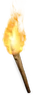
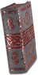
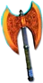
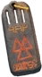

Heyday

Hellfire Torch (Paladin)
Large Charm
Required Level: 75
+3 to Paladin Skill Levels
+10-20 to all Attributes
+10-20% to All Resistances
+8 to Light Radius
5% chance to cast level 10 Firestorm on striking
Level 30 Hydra (10 charges)
Unique Large Charm
Hellfire Torch (Paladin)
Carry only one.
- Type
- Large Charm
- Base
- Large Charm
- Required level
- 75
- Item level
- 110
Other unique Large Charms
- Hellfire Torchlevel 75
- Ogre King's Bowllevel 60

Life & Deathlevel 55
Throne of Powerlevel 81
Valknutlevel 24- Hellfire Torch (Amazon)level 75
- Hellfire Torch (Sorceress)level 75
- Hellfire Torch (Necromancer)level 75
- Hellfire Torch (Barbarian)level 75
- Hellfire Torch (Druid)level 75
- Hellfire Torch (Assassin)level 75
- Hellfire Torch (Warlock)level 75